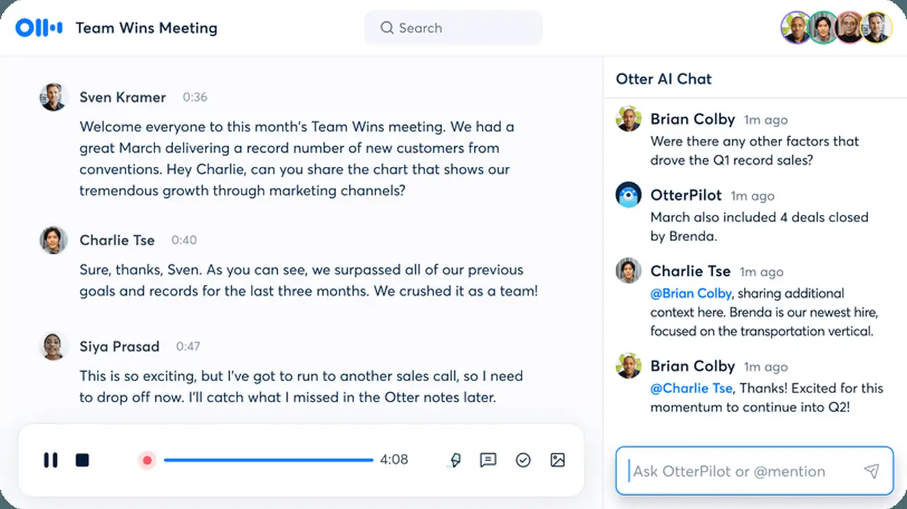
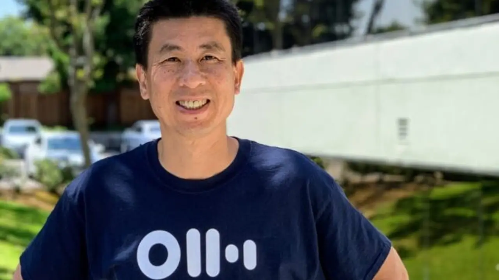

Otter.ai lands $320M from General Catalyst — and gives up no equity for it
- Who: Otter.ai, the Mountain View AI notetaker company founded in 2016 by CEO Sam Liang and CTO Yun Fu.
- What: $320 million in growth financing from General Catalyst's Customer Value Fund (CVF), announced October 20, 2026 — repayable with interest, no shareholder dilution, and no new valuation attached.
- Where it goes: enterprise growth, go-to-market strategy, international expansion, and product innovation; Otter plans to double or triple its sales and marketing budget.
- The target: at least double enterprise revenue next year — ideally triple it. The US is the biggest market, followed by Canada, Britain, and India.
- The scale: more than 40 million users (up from 25 million a year ago), teams at over 86% of the Fortune 500, more than 1 billion meetings transcribed, and $100 million+ in annual recurring revenue crossed in 2025 — against roughly $50 million raised in all prior funding, last round in 2021.
Otter.ai, the AI notetaker that has quietly become the default scribe for more than 40 million people, announced Tuesday it has closed $320 million in growth financing from General Catalyst's Customer Value Fund. The structure is the real story: this is repayable capital, not an equity round. Otter's shareholders keep every share they hold, and the cash gets paid back with interest as the spending it funds turns into revenue.
TechCrunch describes the Customer Value Fund as a vehicle that "provides capital to startups without diluting equity and gets returns on the results of marketing spend." CEO Sam Liang was blunt with Reuters: "We do need to pay them back." Otter will repay the fund with interest as its sales and marketing spending generates revenue, Liang said, adding that General Catalyst could supply more capital once the first sum is spent. The reports give no interest rate, return cap, or repayment schedule.

A marketing war chest, not a model bet
The money goes to enterprise growth, go-to-market strategy, international expansion, and product innovation, per the announcement. Reuters reports Liang plans to double or triple the sales and marketing budget, grow a small sales team, and push harder into foreign markets — the US is Otter's biggest market, followed by Canada, Britain, and India, and the platform supports Spanish, French, German, Japanese, and Mandarin. The internal target: at least double enterprise revenue next year — ideally triple it.
That funnel already exists. About 86% of Fortune 500 companies already have Otter users, mostly through organic adoption, and converting them into paying customers is the explicit plan. Otter has also hired Alex Gay, previously Superhuman's marketing chief, to run the enterprise push, per The Tech Portal.
From notetaker to "voice system of record"
"This financing from General Catalyst is a powerful vote of confidence in what we're building at Otter, and we're excited for the next phase of growth it will drive," Liang said in the announcement. "This will fuel our next chapter, enabling us to build enterprise agentic workflows that bring more advanced, intelligent AI to teams everywhere and push toward a future where voice becomes the backbone of enterprise productivity."
That "voice system of record" framing is the pitch investors are buying. "Voice is one of the biggest untapped opportunities in enterprise AI, and Otter is at the forefront of it," said Pranav Singhvi, partner and co-founder of CVF at General Catalyst. The product roadmap follows: pre-meeting briefs that pull context from earlier conversations, and a live assistant users can question mid-call, The Tech Portal reports.

By the numbers, the bet is already moving. Otter counts more than 40 million users, up from 25 million a year ago, and says it has transcribed more than a billion meetings. It crossed $100 million in annual recurring revenue in 2025. And it claims more than $1.5 billion in customer return on investment — an estimate the company says draws on user surveys finding paying customers regain at least four hours a week, plus an analysis by a large asset manager showing at least $10 of return per $1 spent, Reuters reports.
The crowded room
The financing lands in one of 2026's most crowded markets. TechCrunch lists the competition: well-funded meeting notetakers like Fireflies.ai, Granola, and Read AI; new entrants including Calendly and Wispr; Superhuman, which acquired Fathom; and other notetakers like Circleback, Talat, and Quill — with Microsoft, Google, and Zoom able to bundle meeting AI into products businesses already use. Dealroom notes Granola raised $125 million in March at a reported $1.5 billion valuation.
For context on Otter's own discipline: the $320 million is more than six times the roughly $50 million the company had raised across all its prior funding, per PitchBook figures cited by TechCrunch, with its last equity round back in 2021. Previous backers include Spectrum Equity, Horizon Ventures, and Draper Associates. And Liang told Reuters Otter is aiming for an eventual initial public offering — but wants to build more enterprise revenue first.
The deal is the purest expression of a 2026 venture bet: don't buy equity in the company — fund the funnel, and get paid when the funnel pays. The question it answers for Otter is capital; the question it leaves open is the one TechCrunch flagged: in a market this crowded, will those 40 million users stay?
Frequently asked questions
Why is this $320 million deal unusual?
It's non-equity growth financing from General Catalyst's Customer Value Fund. Otter keeps all of its shares — the money is repaid with interest as the sales-and-marketing spend it funds turns into revenue. The company disclosed no new valuation.
What will Otter do with the money?
Enterprise growth, go-to-market strategy, international expansion, and product innovation. CEO Sam Liang plans to double or triple the sales and marketing budget and at least double enterprise revenue next year, converting the company's existing organic Fortune 500 footprint into paying customers.
How big is Otter.ai right now?
More than 40 million users (up from 25 million a year ago), teams at over 86% of the Fortune 500, and more than 1 billion meetings transcribed. It crossed $100 million in annual recurring revenue in 2025, and had raised roughly $50 million in total before this deal, last round in 2021.